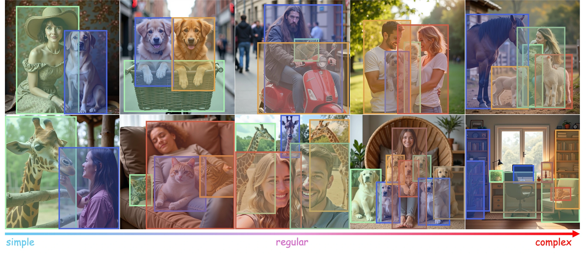
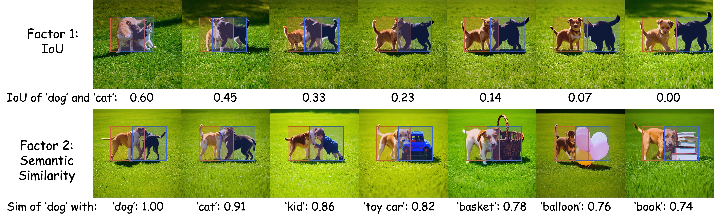
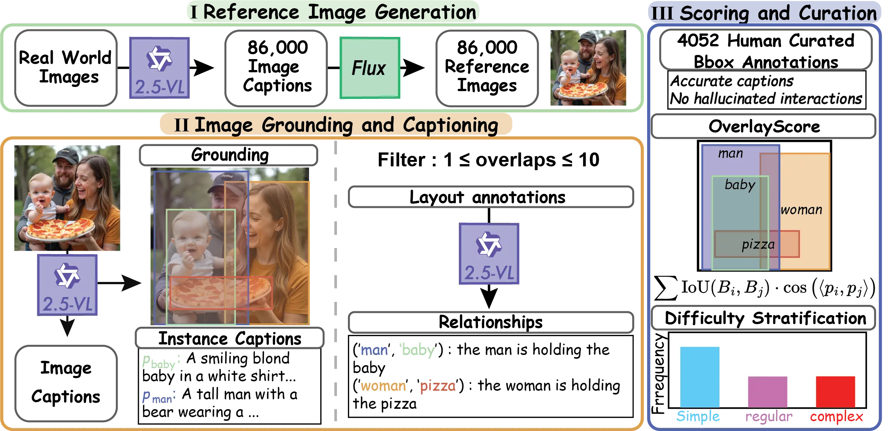
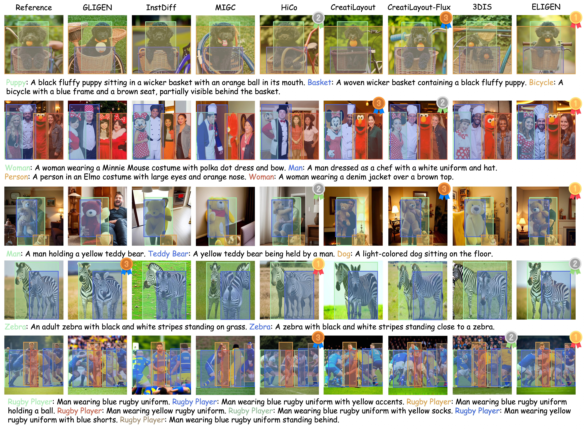
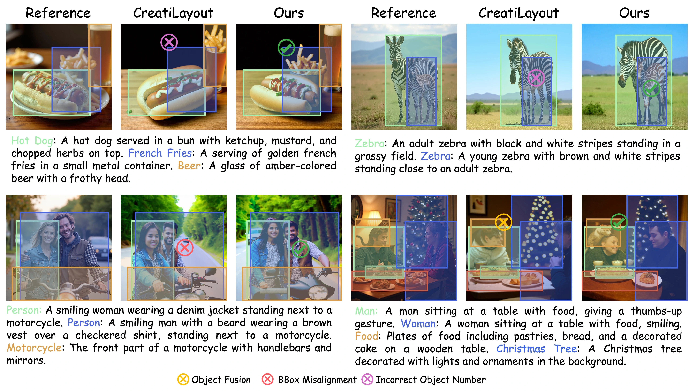

Examples from OverLayBench with difficulty increasing from left to right.
Abstract
Despite steady progress in layout-to-image generation, current methods still struggle with layouts
containing significant overlap between bounding boxes. We identify two primary challenges: (1) large
overlapping regions and (2) overlapping instances with minimal semantic distinction. Through both
qualitative examples and quantitative analysis, we demonstrate how these factors degrade generation
quality. To systematically assess this issue, we introduce OverLayScore, a novel metric that
quantifies the complexity of overlapping bounding boxes. Our analysis reveals that existing
benchmarks are biased toward simpler cases with low OverLayScore values, limiting their
effectiveness in evaluating models under more challenging conditions. To reduce this gap, we present
OverLayBench, a new benchmark featuring balanced OverLayScore distributions and high-quality
annotations. As an initial step toward improved performance on complex overlaps, we also propose
CreatiLayout-AM, a model trained on a curated amodal mask dataset. Together, our contributions
establish a foundation for more robust layout-to-image generation under realistic and challenging
scenarios.
OverLayScore
We created OverLayScore to measure how overlapping objects make layout-to-image (L2I) generation
harder. This metric looks at two key factors:
Spatial overlap — how much the bounding boxes of objects intersect,
measured by Intersection over Union (IoU).
Semantic similarity — how similar the descriptions of the objects are in
the CLIP feature space.

Image quality of CreatiLayout across varying levels of bounding box IoU and semantic
similarity, from poorer to better.
When two objects overlap more, the quality of generated images usually drops. If they also have
similar captions (like both describing “a dog”), the problem becomes even worse.
OverLayScore combines these effects into a single value, making it easier to benchmark and compare
models on challenging layouts.
Formally, OverLayScore is defined as:
$$
\text{OverLayScore} =
\sum_{\substack{(i,j): \text{IoU}(B_i,B_j)>0}}
\text{IoU}(B_i,B_j)\,\cdot\,\cos\bigl(\langle p_i, p_j \rangle \bigr)
$$
Where \(B_i\) and \(B_j\) are the bounding boxes of objects,
and \(\cos\bigl(\langle p_i, p_j \rangle \bigr)\) is the cosine similarity of their CLIP features.
OverLayBench
OverLayBench is a benchmark to test how well models generate images from layouts with overlapping
objects.
We create the dataset in three steps:
Generate reference images from captions generated by VLM from real-images.
Use VLM to detect objects, re-captions, and extract relationships.
Manually curate annotations to ensure accuracy.
OverLayBench includes 4,052 examples with three overlap difficulty, measured by OverLayScore,
covering a balanced range of overlap difficulty levels:.

An overview of the OverLayBench pipeline.
Quantitative Results
Method
# Params
mIoU (%)\(\uparrow\)
O-mIoU (%)\(\uparrow\)
SRE (%)\(\uparrow\)
SRR (%)\(\uparrow\)
CLIPGlobal\(\uparrow\)
CLIPLocal\(\uparrow\)
FID\(\downarrow\)
UNet-based Models
GLIGEN
1.07B
60.54
36.22
49.99
78.72
34.17
24.75
31.27
InstanceDiff
1.23B
71.21
49.99
77.71
87.49
34.25
27.69
36.17
MIGC
0.86B
58.64
32.15
63.41
81.60
33.07
26.49
31.64
HiCo
1.22B
69.47
47.23
67.75
86.08
35.25
27.04
29.21
DiT-based Models
3DIS
N/A
65.75
38.38
86.24
86.98
35.85
29.67
29.18
ELIGEN
12.2B
68.17
43.72
86.50
89.67
36.65
28.29
28.87
CreatiLayout-SD3
3.31B
58.78
32.52
72.34
84.45
37.29
27.49
27.51
CreatiLayout-FLUX
21.78B
71.17
49.80
84.35
90.87
37.40
28.07
23.79
Method
# Params
mIoU (%)\(\uparrow\)
O-mIoU (%)\(\uparrow\)
SRE (%)\(\uparrow\)
SRR (%)\(\uparrow\)
CLIPGlobal\(\uparrow\)
CLIPLocal\(\uparrow\)
FID\(\downarrow\)
UNet-based Models
GLIGEN
1.07B
52.46
34.15
44.88
77.46
33.93
23.42
52.22
InstanceDiff
1.23B
60.08
26.53
72.51
83.36
33.09
26.19
59.73
MIGC
0.86B
47.42
20.06
56.67
77.85
32.72
24.99
54.24
HiCo
1.22B
55.02
29.60
58.24
79.89
33.91
25.34
49.07
DiT-based Models
3DIS
N/A
55.66
27.29
80.80
83.69
35.42
28.12
48.56
ELIGEN
12.2B
58.56
32.62
80.85
84.42
36.27
27.05
45.65
CreatiLayout-SD3
3.31B
47.04
20.67
62.60
78.31
36.67
25.55
45.57
CreatiLayout-FLUX
21.78B
59.72
35.51
77.20
86.39
36.73
26.21
41.51
Method
# Params
mIoU (%)\(\uparrow\)
O-mIoU (%)\(\uparrow\)
SRE (%)\(\uparrow\)
SRR (%)\(\uparrow\)
CLIPGlobal\(\uparrow\)
CLIPLocal\(\uparrow\)
FID\(\downarrow\)
UNet-based Models
GLIGEN
1.07B
47.20
25.63
41.70
79.93
33.92
22.75
57.32
InstanceDiff
1.23B
53.68
23.85
66.02
80.34
32.33
25.53
66.32
MIGC
0.86B
40.04
13.26
47.80
74.48
31.93
24.20
66.52
HiCo
1.22B
46.56
20.35
48.88
75.19
33.15
24.41
55.78
DiT-based Models
3DIS
N/A
50.65
21.75
74.31
81.57
35.11
27.35
54.90
ELIGEN
12.2B
52.53
26.19
74.03
84.09
36.18
25.92
50.41
CreatiLayout-SD3
3.31B
44.24
18.05
52.10
79.98
36.55
24.76
53.29
CreatiLayout-FLUX
21.78B
54.50
28.97
69.72
86.45
36.72
24.85
45.66
Method
mIoU (%)\(\uparrow\)
O-mIoU (%)\(\uparrow\)
SRE (%)\(\uparrow\)
SRR (%)\(\uparrow\)
CLIPGlobal\(\uparrow\)
CLIPLocal\(\uparrow\)
FID\(\downarrow\)
UNet-based Models
BoxDiff
24.48
7.71
42.03
69.94
36.78
21.33
34.65
LayoutGuidance
23.12
7.92
45.78
70.83
33.47
21.22
74.40
R&B
27.78
9.70
36.98
64.05
34.64
21.32
36.57
DiT-based Models
GroundDiT
31.92
10.93
48.57
75.26
36.10
22.73
34.98
RegionalPrompting
42.54
20.10
73.49
75.81
35.45
27.40
23.94
Method
mIoU (%)\(\uparrow\)
O-mIoU (%)\(\uparrow\)
SRE (%)\(\uparrow\)
SRR (%)\(\uparrow\)
CLIPGlobal\(\uparrow\)
CLIPLocal\(\uparrow\)
FID\(\downarrow\)
UNet-based Models
BoxDiff
19.40
5.33
37.58
71.81
36.50
19.97
55.41
LayoutGuidance
15.81
4.51
44.94
72.76
31.76
20.05
128.16
R&B
20.35
5.54
32.85
65.01
34.49
19.88
58.55
DiT-based Models
GroundDiT
24.03
6.70
42.24
74.02
36.00
21.10
54.94
RegionalPrompting
32.72
12.29
63.74
67.08
34.46
25.82
43.13
Method
mIoU (%)\(\uparrow\)
O-mIoU (%)\(\uparrow\)
SRE (%)\(\uparrow\)
SRR (%)\(\uparrow\)
CLIPGlobal\(\uparrow\)
CLIPLocal\(\uparrow\)
FID\(\downarrow\)
UNet-based Models
BoxDiff
20.02
5.21
33.52
76.41
36.92
19.91
59.70
LayoutGuidance
16.34
4.01
37.76
75.53
32.75
19.72
119.32
R&B
19.80
4.85
28.38
69.97
34.57
19.47
63.71
DiT-based Models
GroundDiT
24.77
6.58
37.85
77.03
36.20
20.55
55.59
RegionalPrompting
28.35
9.05
53.56
60.37
33.34
25.29
49.41
Qualitative Results

Comparison of generated images from different models on our OverLayBench.
CreatiLayout-AM
CreatiLayout-AM is an enhanced version of CreatiLayout designed to better handle complex
overlapping objects. Unlike standard training, it incorporates amodal masks—complete object
shapes even when parts are occluded—during training. By fine-tuning the model on a large set of
synthetic occlusion examples and aligning its attention maps with ground truth amodal masks,
CreatiLayout-AM improves the generation of distinct, coherent objects in overlapped
regions. Experiments show consistent gains in overlap-sensitive metrics like O-mIoU, confirming
that explicit occlusion supervision can significantly improve generation quality under
challenging layouts.
Qualitative Comparison between basemodel
Method
Split
mIoU (%)\(\uparrow\)
O-mIoU (%)\(\uparrow\)
SRE (%)\(\uparrow\)
SRR (%)\(\uparrow\)
CLIPGlobal\(\uparrow\)
CLIPLocal\(\uparrow\)
FID\(\downarrow\)
CreatiLayout
Simple
58.78
32.52
72.34
84.45
37.29
27.49
27.51
Ours
Simple
61.16
37.69
73.33
84.84
37.17
27.44
27.76
vs. BaseModel
+4.05%
+15.88%
+1.37%
+0.46%
-0.32%
-0.18%
+0.91%
CreatiLayout
Regular
47.04
20.67
62.60
78.31
36.67
25.55
45.57
Ours
Regular
47.38
21.79
63.13
78.71
36.49
25.46
46.34
vs. BaseModel
+0.72%
+5.42%
+0.85%
+0.51%
-0.49%
-0.35%
+1.68%
CreatiLayout
Complex
44.24
18.05
52.10
79.98
36.55
24.76
53.29
Ours
Complex
43.97
18.07
52.49
79.77
36.32
24.72
53.48
vs. BaseModel
-0.61%
+0.11%
+0.75%
-0.26%
-0.63%
-0.16%
+0.36%
Qualitative Comparison between basemodel

Comparison of generated image from CreatiLayout and CreatiLayout-AM. The CreatiLayout-AM
generates overlap instances better, leading to more coherent and realistic images.